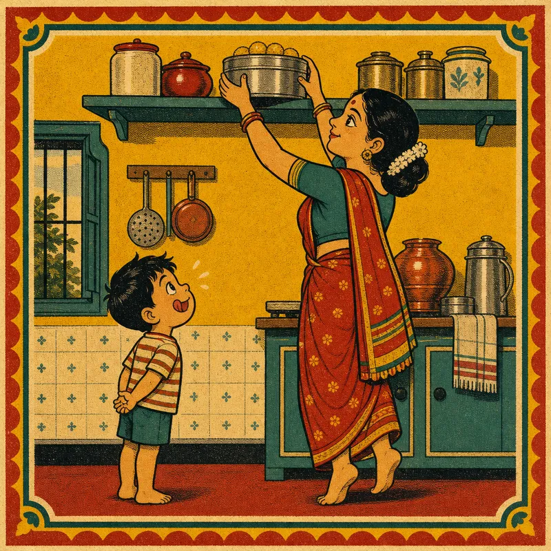
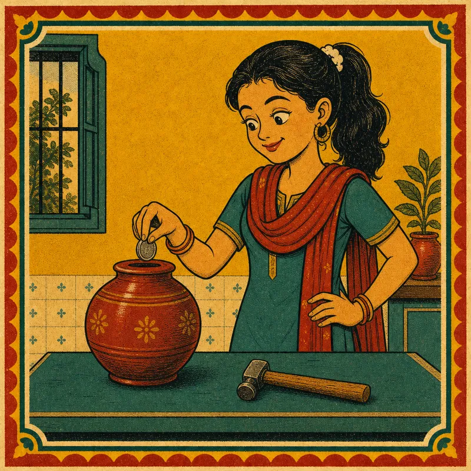
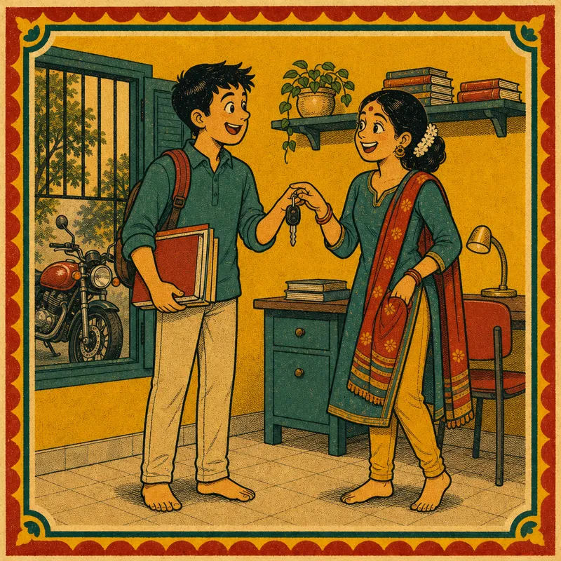
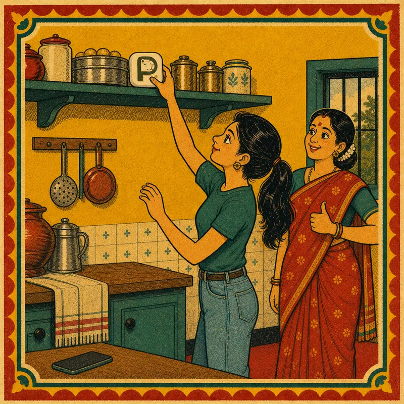

Mummy hides the laddoos on the top shelf.
Not locked away. Just far enough that you think twice.
A · B · Mock C · Indian hiding habits
Why Pauzie
Every Indian home has used it for generations.

Mummy hides the laddoos on the top shelf.
Not locked away. Just far enough that you think twice.

A gullak has no “withdraw” button.
To spend the money, you have to break it. So you don't.

Before exams, the bike keys go to Didi.
You decided once. Now you don't have to decide every hour.

Pauzie is the top shelf for your phone.
App blockers keep the unlock button inside the phone. Pauzie keeps it across the room.
Same trick. Now for your attention.